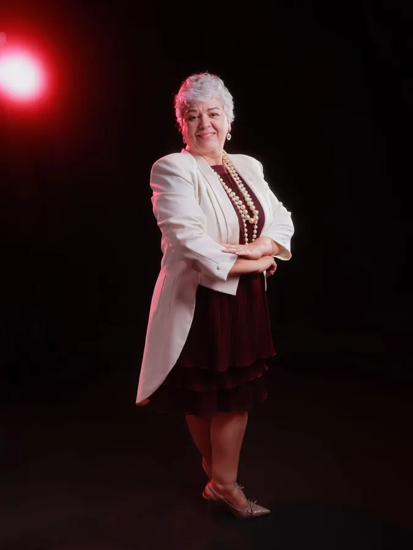

Cultura mato-grossense
A voz que leva Mato Grosso para o mundo.
Música genuinamente mato-grossense, feita por cuiabanos de “chapa & cruz” e “pau-rodados” também. Décadas de estrada, três álbuns lançados e um documentário — com direção musical e regência de Sonia Mazetto.
- Rasqueado
- Viola de cocho
- Falar cuiabano
- 3 álbuns
- Cuiabá · MT

A história
Nasceu dentro de uma repartição — e virou patrimônio cultural.
O Coral Mato Grosso surgiu nos anos 1990, no ambiente do Tribunal de Contas do Estado de Mato Grosso, reunindo servidores que dividiam o gosto por cantar. O que começou como encontro entre colegas se transformou em um dos grupos mais representativos da música cuiabana.
Sob a direção musical e a regência de Sonia Mazetto, o coral assumiu uma missão que vai muito além do canto: enfrentar o preconceito contra o jeito de falar do cuiabano e mostrar que a cultura do estado tem valor de sobra para ocupar qualquer palco.
São décadas de estrada, três álbuns lançados e um repertório que carrega o rasqueado, a viola de cocho, o Pantanal e a Chapada — tudo cantado com o sotaque que a terra deu.
Divulgar a cultura mato-grossense — e quebrar as barreiras do preconceito com o falar cuiabano.
A missão do Coral Mato Grosso
Documentário
Música Mato-Grossense Tipo Exportação
Os bastidores e os segredos do coral mais cuiabano de todos — a história de como o rasqueado encontrou a batida eletrônica.
Minidocumentário · Canal oficial do Coral Mato Grosso · assistir no YouTube
Discografia
Três álbuns lançados.
Em mais de duas décadas de estrada, o Coral Mato Grosso registrou três discos dedicados à música do estado. O mais recente uniu o canto orgânico do coral à produção eletrônica.
Álbum mais recente
Música Mato-Grossense Tipo Exportação
Quando o rasqueado encontra a batida eletrônica.
O projeto levou o repertório do coral para o estúdio e o reimaginou em versões remix, assinadas pelo produtor musical José Stival. O resultado: sete faixas que preservam o canto do grupo e ganham o corpo da música eletrônica, além do minidocumentário sobre a trajetória.
- Produção musical e arranjos — José Stival
- Direção musical e regência — Sonia Mazetto
- Realização — Lei Aldir Blanc · SECEL-MT


Leve o Coral Mato Grosso ao seu evento.
Apresentações, projetos culturais e ações que celebram a música e o falar do nosso estado.